Problema classico della programmazione concorrente associato a Dijkstra e divulgato da Hoare nella formulazione dei filosofi a cena. Le slide lo usano per confrontare protocolli di acquisizione di risorse condivise.
Descrizione: Cinque filosofi trascorrono la vita alternando due attivita: pensare e mangiare. I pasti sono consumati a un tavolo con 5 piatti e 5 forchette. Al centro c'e una scodiglia di spaghetti sempre piena. Ogni filosofo ha bisogno di due forchette per mangiare — quella a sinistra e quella a destra — ma può raccoglierle solo una alla volta.
L'obiettivo e progettare protocolli pre- e post- che garantiscano: mutua esclusione sulle forchette, assenza di deadlock, assenza di starvation, ed efficienza in assenza di contesa.
Il primo tentativo — modellare ogni forchetta come semaforo binario e far prendere a ogni filosofo prima la sinistra poi la destra — porta a deadlock. Se tutti i filosofi prendono la forchetta sinistra contemporaneamente, nessuno potra mai prendere quella destra. E l'esempio didattico perfetto di circular wait.
Il professor Ricci riassume cosi i requisiti dei protocolli di pre- e post- da progettare:
Il ciclo locale è: pensa → acquisisce le due forchette → mangia → le rilascia → pensa. Una forchetta destra occupata significa attesa, non necessariamente deadlock: bisogna controllare anche gli altri filosofi. Il simulatore tiene traccia dello stato condiviso completo.
Il problema fu introdotto da Dijkstra proprio per illustrare il problema del deadlock (che chiamava deadly embrace); oggi e considerato un classico veicolo didattico per confrontare formalismi di programmazione concorrente. La sfida e che le forchette sono condivise tra filosofi adiacenti: la forchetta f[i] è usata da F[i] e F[(i−1+N)%N]. Equivalentemente, Fᵢ richiede f[i] e f[(i+1)%N], come nel codice e nella figura.
semaphore array[0..4] fork ← [1,1,1,1,1]
philosopher[i]: { per i = 0..4 }
loop forever
think
wait(fork[i]) { prendi forchetta sinistra }
wait(fork[(i+1)%N]) { prendi forchetta destra }
eat
signal(fork[i])
signal(fork[(i+1)%N])Questo tentativo e corretto per la mutua esclusione (nessuna forchetta e mai tenuta da due filosofi contemporaneamente, perche ogni forchetta e un semaforo binario), ma soffre di deadlock: se tutti i filosofi prendono contemporaneamente la forchetta sinistra prima che qualcuno provi a prendere la destra, nessuno puo mangiare e tutti restano bloccati per sempre in attesa della forchetta destra.
Attiva JavaScript per scegliere l’interleaving. Le quattro tracce nella sezione successiva mostrano comunque tutti i passi e gli stati finali.
Confronta primo tentativo, ticket e ordine totale. Cambiare protocollo avvia una nuova esecuzione; non libera magicamente i lock di un’esecuzione in deadlock. Le tracce statiche sotto restano disponibili senza JavaScript.
In sintesi: ogni forchetta e modellata come un semaforo binario, e il filosofo puo raccoglierne solo una alla volta. Purtroppo questa soluzione deadlocka: se tutti i filosofi raccolgono la forchetta sinistra prima che qualcuno provi a raccogliere la destra, nessuno puo mai mangiare.
Nel modello di acquisizione di risorse non sottraibili, un deadlock è un insieme di processi che non può avanzare perché ciascuno aspetta risorse rilasciabili soltanto da processi dello stesso insieme. Qui studiamo lock e forchette a istanza singola; altri deadlock possono coinvolgere attese di eventi o perfino un solo processo con lock non rientrante. Le quattro condizioni di Coffman per il modello di risorse sono:
Una politica che permette queste condizioni rende possibile un deadlock, ma non significa che ogni esecuzione vi arrivi. In uno stato di attesa effettivo, un ciclo del grafo wait-for è sufficiente nel nostro modello con una sola istanza per risorsa e richieste bloccanti: nessun partecipante può raggiungere il rilascio. Con più istanze per tipo, un ciclo del grafo di allocazione non basta da solo. Impedire una delle condizioni previene i deadlock di risorse coperti dal modello.
Il caso più semplice: thread A detiene L e richiede M, mentre thread B detiene M e richiede L. Se entrambi raggiungono questa attesa senza poter rilasciare, si bloccano. Alcuni DBMS prevedono rilevamento e rollback: per esempio PostgreSQL rileva i deadlock e abortisce una transazione coinvolta. Non è una proprietà universale di qualsiasi database o tipo di risorsa.
Rilevamento e recupero sono diversi. Java offre diagnostica anche durante l’esecuzione: ThreadMXBean.findDeadlockedThreads() trova cicli fra platform thread su monitor e ownable synchronizer supportati; non include cicli con virtual thread. La JVM non risolve automaticamente un ciclo di monitor scegliendo una vittima e annullandone le modifiche.
Nel caso dei filosofi, la catena circolare di attesa e esattamente questa:

Nella lezione di ripasso il professore richiama le condizioni di Coffman e ripropone la simulazione completa con tutti e cinque i filosofi: guidando a mano l'interleaving si puo riprodurre (o evitare) il deadlock del primo tentativo.
Quattro tracce generate dallo stesso modello dei pulsanti. Il conteggio delle forchette occupate non è un criterio di deadlock: nel secondo caso F0 e F2 possiedono entrambe le forchette e possono mangiare. Nei casi ticket e ordine totale, F3 può acquisire f4 e poi proseguire fino al rilascio.
| Filosofo | Detiene | Prossima istruzione | Eseguibile? |
|---|---|---|---|
| F0 | f0 | wait(f1) | no |
| F1 | f1 | wait(f2) | no |
| F2 | f2 | wait(f3) | no |
| F3 | f3 | wait(f4) | no |
| F4 | f4 | wait(f0) | no |
Deadlock: F0 → F1 → F2 → F3 → F4 → F0. Nessun rilascio può spezzare questo ciclo nel modello.
| Passo | Istruzione | Proprietari di f0, f1, f2, f3, f4 |
|---|---|---|
| 1 | F0: termina think | libera · libera · libera · libera · libera |
| 2 | F1: termina think | libera · libera · libera · libera · libera |
| 3 | F2: termina think | libera · libera · libera · libera · libera |
| 4 | F3: termina think | libera · libera · libera · libera · libera |
| 5 | F4: termina think | libera · libera · libera · libera · libera |
| 6 | F0: wait(f0) | F0 · libera · libera · libera · libera |
| 7 | F1: wait(f1) | F0 · F1 · libera · libera · libera |
| 8 | F2: wait(f2) | F0 · F1 · F2 · libera · libera |
| 9 | F3: wait(f3) | F0 · F1 · F2 · F3 · libera |
| 10 | F4: wait(f4) | F0 · F1 · F2 · F3 · F4 |
| Filosofo | Detiene | Prossima istruzione | Eseguibile? |
|---|---|---|---|
| F0 | f0, f1 | eat | sì |
| F1 | — | termina think | sì |
| F2 | f2, f3 | eat | sì |
| F3 | — | termina think | sì |
| F4 | f4 | wait(f0) | no |
Nessun deadlock nello stato corrente. Istruzioni eseguibili: F0, F1, F2, F3.
| Passo | Istruzione | Proprietari di f0, f1, f2, f3, f4 |
|---|---|---|
| 1 | F0: termina think | libera · libera · libera · libera · libera |
| 2 | F0: wait(f0) | F0 · libera · libera · libera · libera |
| 3 | F0: wait(f1) | F0 · F0 · libera · libera · libera |
| 4 | F2: termina think | F0 · F0 · libera · libera · libera |
| 5 | F2: wait(f2) | F0 · F0 · F2 · libera · libera |
| 6 | F2: wait(f3) | F0 · F0 · F2 · F2 · libera |
| 7 | F4: termina think | F0 · F0 · F2 · F2 · libera |
| 8 | F4: wait(f4) | F0 · F0 · F2 · F2 · F4 |
| Filosofo | Detiene | Prossima istruzione | Eseguibile? |
|---|---|---|---|
| F0 | f0 | wait(f1) | no |
| F1 | f1 | wait(f2) | no |
| F2 | f2 | wait(f3) | no |
| F3 | f3 | wait(f4) | sì |
| F4 | — | wait(ticket) | no |
Nessun deadlock nello stato corrente. Istruzioni eseguibili: F3.
| Passo | Istruzione | Proprietari di f0, f1, f2, f3, f4 |
|---|---|---|
| 1 | F0: termina think | libera · libera · libera · libera · libera |
| 2 | F1: termina think | libera · libera · libera · libera · libera |
| 3 | F2: termina think | libera · libera · libera · libera · libera |
| 4 | F3: termina think | libera · libera · libera · libera · libera |
| 5 | F4: termina think | libera · libera · libera · libera · libera |
| 6 | F0: wait(ticket) | libera · libera · libera · libera · libera |
| 7 | F1: wait(ticket) | libera · libera · libera · libera · libera |
| 8 | F2: wait(ticket) | libera · libera · libera · libera · libera |
| 9 | F3: wait(ticket) | libera · libera · libera · libera · libera |
| 10 | F0: wait(f0) | F0 · libera · libera · libera · libera |
| 11 | F1: wait(f1) | F0 · F1 · libera · libera · libera |
| 12 | F2: wait(f2) | F0 · F1 · F2 · libera · libera |
| 13 | F3: wait(f3) | F0 · F1 · F2 · F3 · libera |
| Filosofo | Detiene | Prossima istruzione | Eseguibile? |
|---|---|---|---|
| F0 | f0 | wait(f1) | no |
| F1 | f1 | wait(f2) | no |
| F2 | f2 | wait(f3) | no |
| F3 | f3 | wait(f4) | sì |
| F4 | — | wait(f0) | no |
Nessun deadlock nello stato corrente. Istruzioni eseguibili: F3.
| Passo | Istruzione | Proprietari di f0, f1, f2, f3, f4 |
|---|---|---|
| 1 | F0: termina think | libera · libera · libera · libera · libera |
| 2 | F1: termina think | libera · libera · libera · libera · libera |
| 3 | F2: termina think | libera · libera · libera · libera · libera |
| 4 | F3: termina think | libera · libera · libera · libera · libera |
| 5 | F4: termina think | libera · libera · libera · libera · libera |
| 6 | F0: wait(f0) | F0 · libera · libera · libera · libera |
| 7 | F1: wait(f1) | F0 · F1 · libera · libera · libera |
| 8 | F2: wait(f2) | F0 · F1 · F2 · libera · libera |
| 9 | F3: wait(f3) | F0 · F1 · F2 · F3 · libera |
Due soluzioni classiche preservano la mutua esclusione e impediscono l’attesa circolare. L’assenza di starvation richiede anche ipotesi sull’equità delle acquisizioni e dello scheduler, e che chi mangia termini e rilasci: non segue dalla sola assenza di deadlock.
Limitiamo a N−1 i filosofi ammessi al protocollo, dall’acquisizione del ticket alla sua restituzione (quindi 4 su 5). Non sono quattro commensali che mangiano simultaneamente: con cinque forchette, al massimo due filosofi possono mangiare insieme. L'idea e che se solo 4 filosofi possono tentare di prendere le forchette, almeno uno riuscira sempre a prendere entrambe. Si introduce un semaforo counting ticket inizializzato a 4.
Il ticket si acquisisce prima di qualsiasi forchetta e si restituisce dopo averle rilasciate entrambe. Il limite rompe il ciclo che richiederebbe tutti e cinque i filosofi nel protocollo; non serializza tutti i pasti.
Si osserva che non c'e deadlock se si impone un ordine totale nell'acquisizione delle forchette. L'idea e che ogni filosofo prende prima la forchetta con indice minore e poi quella con indice maggiore.
Il professore spiega l'intuizione: "Se lui cerca di prendere prima la forchetta con indice minore, e questa e gia stata presa da un altro, si blocca subito senza avere l'altra forchetta. Quindi l'altra forchetta puo essere presa dal filosofo vicino. Non si crea mai un ciclo di attesa."
Ammettere al protocollo al massimo N−1 filosofi (4 su 5), introducendo un semaforo ticket inizializzato a 4:
semaphore ticket := (4, {})
loop forever
think
wait(ticket)
wait(fork[i])
wait(fork[(i+1) % N])
eat
signal(fork[i])
signal(fork[(i+1) % N])
signal(ticket)La soluzione impedisce il deadlock di forchette. Un semaforo non equo può però favorire ripetutamente altri concorrenti. In Java Semaphore distingue acquisizioni eque da quelle senza garanzie di ordine; il modello qui è non equo e non promette attesa limitata.
Rimuovere la condizione di circular wait facendo prendere le forchette in un ordine totale (es., prima la forchetta con indice minore, poi quella con indice maggiore):
integer first = min(i, (i+1) % N)
integer second = max(i, (i+1) % N)
loop forever
think
wait(fork[first])
wait(fork[second])
eat
signal(fork[first])
signal(fork[second])L'ultimo filosofo (indice 4) prendera prima la forchetta 0 e poi la 4, invertendo l'ordine rispetto agli altri — il wait-for chain si spezza.
Un modo intuitivo di vedere la soluzione con ticket e la sala da pranzo: il semaforo ticket inizializzato a N-1 fa entrare in sala al massimo N-1 filosofi su N — solo loro possono competere per le forchette, rompendo la circolarita. Per la soluzione con ordinamento, equivalentemente, si osserva che il deadlock non si verifica se l'ultimo filosofo prende prima la forchetta destra e poi la sinistra: la regola e acquisire sempre i lock in un ordine totale prestabilito, il che rende impossibile la condizione di circular wait.
Dall'esperienza dei Filosofi si generalizza una regola semplice ma potentissima per evitare deadlock in sistemi con lock multipli. Il professore la presenta come forse la cosa piu importante da ricordare quando si scrive codice concorrente:
Supponiamo per assurdo un ciclo di attesa su lock acquisiti sempre in ordine strettamente crescente. Ogni processo nel ciclo detiene il lock atteso dal precedente e richiede un lock di rango maggiore. Seguendo il ciclo si otterrebbe r₀ < r₁ < … < rₖ < r₀, impossibile per un ordine totale. Questo argomento riguarda le acquisizioni dei lock ordinati: non esclude da solo deadlock introdotti da altre attese, né starvation.
Piuttosto che dimostrarlo formalmente, il professore ne da l'intuizione: "Notate che cosa succede se lui cerca di prendere prima la forchetta con indice minore. L'ha gia presa? Se e gia stata presa si blocca in attesa senza avere il possesso dell'altra. Quindi sostanzialmente il fatto di imporre l'ordine permette di fare in modo che, quando si crea una situazione che va verso l'essere ciclico, un processo non riesce a prendere neanche la prima."
La regola "acquisisci sempre i lock nello stesso ordine" e forse il singolo concetto piu importante da ricordare per scrivere codice concorrente corretto. Il deadlock e stato ampiamente studiato, e sono state identificate le condizioni necessarie: romperne anche solo una e sufficiente.
Il professore dedica una parte della lezione alle proprieta di liveness dei thread, riprendendo materiale da "Java Concurrency in Practice". Anche se la sezione critica garantisce mutua esclusione, non e sufficiente: il programma deve anche progressare. Tre problemi distinti:
Deadlock (stallo): due o piu thread aspettano ciascuno un lock che l'altro possiede, e nessuno puo proseguire. Le condizioni necessarie (Coffman, 1971) sono quattro e devono valere tutte contemporaneamente:
Starvation (inedia): una richiesta può restare insoddisfatta indefinitamente mentre altri processi avanzano, per esempio per selezione non equa dei permessi o della CPU. Il thread può essere in attesa di un lock oppure pronto ma mai eseguito; non serve un ciclo di deadlock. Una lunga attesa finita, da sola, non dimostra starvation.
Livelock: i thread non sono bloccati ma continuano a eseguire azioni che non portano a progresso. Un esempio tipico: due thread che rilevano un conflitto e "cedono" il passo all'altro, finendo per oscillare senza mai procedere. Il professore lo menziona a proposito del terzo tentativo di soluzione della sezione critica.
Thread dump e API di gestione consentono diagnosi su una JVM ancora in esecuzione. Questo non equivale a recovery automatico: l’acquisizione di un monitor synchronized non viene annullata semplicemente interrompendo il thread. Protocolli espliciti con acquisizioni interrompibili o temporizzate richiedono rilascio dei lock già ottenuti e gestione coerente dello stato.
Il professore mostra il deadlock nella sua forma piu semplice: deadly embrace (abbraccio mortale). Due thread, A e B, e due lock, L1 e L2:
// Frammenti eseguiti da due thread, sugli stessi oggetti L1 e L2.
// A:
synchronized (L1) {
synchronized (L2) { /* sezione critica */ }
}
// B:
synchronized (L2) {
synchronized (L1) { /* sezione critica */ }
}Deadlock possibile, non inevitabile: A acquisisce L1, B acquisisce L2, poi ciascuno richiede il monitor dell’altro. Se A completa prima che B inizi, non si forma il ciclo.
// A e B usano entrambi lo stesso ordine:
synchronized (L1) {
synchronized (L2) { /* sezione critica */ }
}Questo impedisce il ciclo sui due monitor, purché tutti i percorsi rispettino lo stesso ordine e non introducano altre attese. Non garantisce da solo assenza di starvation.
La soluzione strutturale al deadlock segue una regola semplice ma potente: acquisire i lock sempre nello stesso ordine globale. Se tutti i thread acquisiscono L1 prima di L2, il ciclo di attesa non puo formarsi, perche non ci puo essere un thread che tiene L2 e richiede L1 mentre un altro tiene L1 e richiede L2.
Distinguere una politica che permette attesa circolare da un ciclo di attesa già presente. L’ordine globale previene i lock-ordering deadlock; un timeout da solo non basta: in caso di acquisizione fallita bisogna rilasciare ciò che si detiene e decidere come ritentare. Retry sincronizzati possono produrre livelock. Meno lock o astrazioni più alte non costituiscono, da soli, una prova di assenza di deadlock.